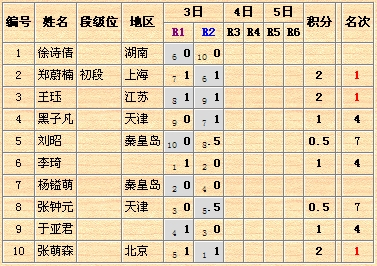

女子组两轮过后计分情况
首页
五子棋新闻
#1 女子组两轮过后计分情况 作者：有志青年 发表时间：2007-10-3 20:16:52

#2 Re:女子组两轮过后计分情况 作者：daiyue 发表时间：2007-10-3 20:43:23
布布+U~~
#3 Re:女子组两轮过后计分情况 作者：南通小小包 发表时间：2007-10-3 21:17:16
狮子+U
#4 Re:女子组两轮过后计分情况 作者：taotao 发表时间：2007-10-3 21:53:58
 狮子，加油啊！
狮子，加油啊！
#5 Re:女子组两轮过后计分情况 作者：daiyue 发表时间：2007-10-5 13:14:26
发张狮子的照片，
也好让我为她加加油~~